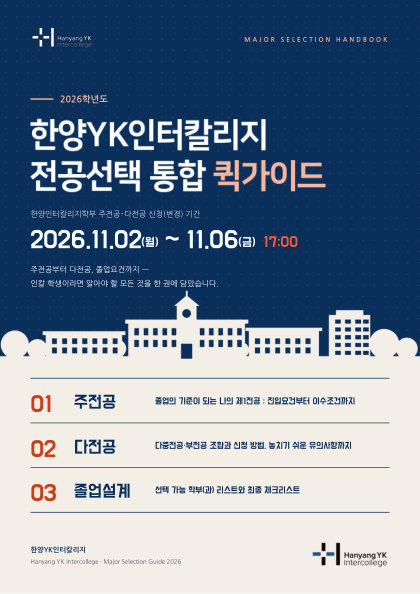

HANYANG YK INTERCOLLEGE · 2026
전공선택 자료실
읽고 싶은 책을 눌러 펼쳐 보세요.
주전공·다전공 신청
2026. 11. 2.(월) ~ 11. 6.(금) 17:00

전공선택 통합 퀵가이드북
주전공·다전공 이수요건, 졸업요건,
선택 가능 학부(과)
펼쳐보기
MAJOR APPLICATION MANUAL
2026학년도 · 학생용
주전공·다전공
신청 매뉴얼
01 신청 전 확인
02 최초 신청
03 변경·승인
Hanyang YK Intercollege
주전공·다전공 신청 매뉴얼
HY-in 포털 신청·변경 화면
단계별 안내
펼쳐보기